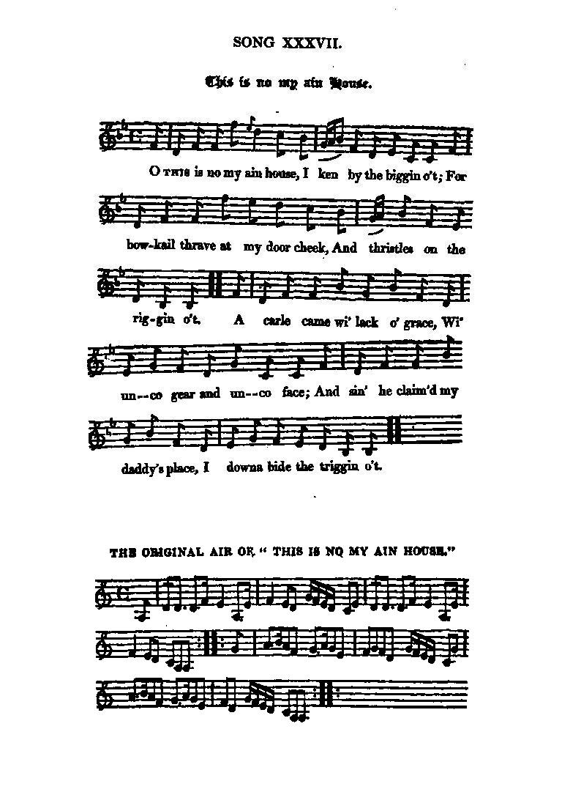
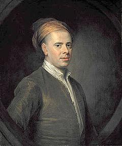
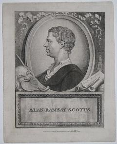

This Is No My Ain House
Cette maison, la mienne?
An allegory of Scotland loosing its rightful ruler
La perte par l'Ecosse de son souverain légitime
Published in James Hogg's Jacobite Relics, 1st series (1819), N°37

To the tune:
|
1° Hogg writes in a note: "The air to which I have set this song is not the original one": Hogg's "new" version, song N° 37. 2° "For my part, I like the old original much better". (This version is also known as "The Deil stick the minister!"): "Original air". 3° "This is another of the old songs altered by Ramsay into a love song". Ramsay's text is published in the "Scots Musical Museum" Volume III song 216, page 225, to the following tune: Ramsay's "This is no my ain hoose" 4° In Captain Fraser's collection another version of the "Original air" is found with the remark: "This tune "is the modelling of Mr. Campbell of Budyet, and the other Nairnshire Gentlemen, formerly mentioned; the air is of considerable antiquity, but formed by them into this standard". Fraser (The Airs and Melodies Peculiar to the Highlands of Scotland and the Isles), 1874; No. 187, pgs. 76-77. "Sean-Triubhais Uilleachain" These "Willie's Auld Trews" provide the sound background to the present page. Due to a possible confusion between "hoose" (=house) and "hose" (=knee breeches), the aforementioned Scots songs refer to a real or allegorical house while the Gaelic tune's title refers to a garment: "Willie's Auld trews", or in Gaelic "Sean Triubhas Uilleachan" (phonetically "Shantruish"). Logically Duncan Ban McIntyre's "Song to the Breeches" may be sung using this tune. 5° For the sake of exhaustivity, a clearly related song be here mentioned: "Lochiel is awa to France" These tunes are sequenced by Ch.Souchon. |
1° Hogg indique dans une note: "L'air que j'ai indiqué n'est pas l'air original , mais le plus répandu..." "Nouvelle" version de Hogg, chant N° 37. 2° "Pour ma part, je préfère, et de loin, l'ancien original, bien supérieur." (Cette version porte également le nom de "Le diable emporte le pasteur"!) "Air original". 3° "Voilà encore un chant dont Ramsay a voulu faire une romance". Ce texte a été publié dans le "Musée Musical Ecossais" Volume III chant 216, page 225. Il suit la ligne mélodique ci-après: "Ce n'est pas ma maison" de Ramsay 4° Dans la Collection du Capitaine Fraser on trouve une autre version de l'"Air original", assortie de cette remarque: "Cette mélodie a été mise en forme par M. Campbell de Budy et et un autre auteur originaire du Nairnshire, déjà mentionné. Elle est très ancienne, mais c'est eux qui en ont fait ce morceau de référence." Fraser (The Airs and Melodies Peculiar to the Highlands of Scotland and the Isles), 1874; No. 187, pgs. 76-77. "Sean-Triubhais Uilleachain" Ces "Vieilles culottes de Guillot" servent de fond sonore à la présente page. Par suite, peut-être, d'une confusion entre "hoose" (=maison) et "hose" (=hauts de chausse), tous les textes cités parlent d'une maison au sens propre ou au figuré, alors que le titre gaélique de la mélodie parle de culottes: "Sean Triubhas Uilleachan", ("Willie's Auld trews", "Les vieilles culottes de Guillot"). Plus logiquement, on peut chanter sur cet air la "Chanson des culottes" de Duncan Ban McIntyre . 5° Pour être complets, citons encore une mélodie évidemment apparentée aux précédentes: "Lochiel est en France" Tous ces morceaux sont séquencés par Ch.Souchon. |

|
THIS IS NO MY AIN HOUSE Chorus: O This is no my ain house, I ken by the biggin o't; For bow-kail thrave at my door cheek And thistles on the riggin o't. 1. A carle came wi' lack o' grace, Wi' unco gear and unco face; And sin he claimed my daddy's place, I downa bide the triggin o't. 2. W' routh o' kin and routh o' reek, My daddy's door it wadna steek; But bread and cheese were his door cheek, And girdle cakes the riggin o't. 3. My daddy bag his housie weel, By dint o' head and dint o' heel, By dint o' arm and dint o' steel, And muckle weary priggin o't. 4. Then was it dink, or was it douce For ony cringing foreign goose To claucht my daddie's wee bit house, Ans spoil the hamely triggin o't? 5. Say, was it foul, or was it fair, To come a hunder mile and mair, For to ding out my daddy's heir, And dash him wi' the whiggin(*) o't? (*) "whigamore" means "horse thief. The Stuarts are accused of having in the first place stolen the house (Scotland) from where they are now driven out. |
CETTE MAISON, LA MIENNE? Refrain: Cette maison, la mienne? Est-elle ainsi faite? Ah, non! Les choux poussent près de la porte, Son faîte est couvert de chardons. 1. Vint un rustre aux rudes manières, Et aux allures d'étranger; Depuis qu'il a chassé mon père, Il dérange tout. Je le hais. 2. Pleine de monde et de fumée, Sa porte filtrait des senteurs; Ainsi faisait la cheminée: Pain, fromage et crêpes au beurre. 3. Mon père avait avec son âme, Et sa sueur bâti ce logis, Avec son bras, avec ses armes, Force marchandages aussi. 4. Pensez-vous donc qu'il soit honnête Qu'un vilain oison d'étranger S'empare de sa maisonnette, Et bouleverse mon foyer? 5. N'est-il pas à l'honneur contraire, De faire ainsi plus de cent lieues, Pour chasser l'héritier d'un père, En traitant de Whigs(*) ses aïeux? (Trad. Ch.Souchon(c)2004) (*) Whigamore signifie "voleur de chevaux": les Stuarts auraient, les premiers, volé la maison (l'Ecosse) qu'on leur a reprise. |
|
The lyrics of this song are derived from an old children's song: O this is no ma ain hoose, Ma ain hoose, ma ain hoose O this is no ma ain hoose, I ken by the biggin o't For breid and cheese are my door cheeks, Are my door cheeks, are my door cheeks; For breid and cheese are my door cheeks, And pancakes the riggin o't. O this is no ma ain wean,(=wee one) Ma ain wean, ma ain wean O this is no ma ain wean, I ken by the greetie o't I'll take the curchie (curtsey) aff ma heid, Aff ma heid, aff ma heid; I'll take the curchie aff ma heid, And row't aboot the feetie o't. A few lines of these lyrics were borrowed from Allan Ramsay (1686-1758) who wrote a love song, also titled "This is no mine ain hoose". The text is published in the "Scots Musical Museum" Volume III song 216, page 225: This is no mine ain hoose, I ken bi the riggin o't; Since wi my love I've changed vous, I dinna like the biggin o't. For nou that I'm young Rabbie'S bride, An mistress o his fire-side, Mine ain hoose I like to guide, An please me wi the triggin o't. Then fareweel to my faither's hoose, I gang where love invites me; The strictest duty this allous, When love wi honour meets me. When hymen moulds me into ane, My Rabbie's nearer than my kin, An to refuise him were a sin, Sae lang's he kindly treats me. When I am in mine ain hoose, True love shall be at hand aye, To mak me still a prudent spouse, An let my man command aye; Avoidin ilka cause o strife, The common pest o mairied life, That maks ane wearied o his wife, An braks the kindly band aye. The comment by James Hogg to Ramsay's alteration of the old song is worth mentioning: "This is another of the old songs altered by Allan Ramsay into a love song, and greatly to the worse, nothing being preserved except the chorus. How beautiful is the allegory here of Scotland losing its rightful owner, compared to the insipid and commonplace trash that we have got in lieu of it..." (Follows a comparison of verse 2 of the Jacobite song, "a delightful picture of our ancient and homely hospitality" with verse 2 in Ramsay's lyrics)... "The bathos is enough to turn one's stomach!" |
Le texte de cette chanson est adapté d'une ancienne comptine enfantine: O, ce n'est pas ma chère maison Ma maison, ma maison O ce n'est pas ma maison, Je la reconnais aux matériaux dont elle est faite. Car les montants de porte sont en pain et en fromage, Les montants de porte, les montants de porte; Car les montants de porte sont en pain et en fromage, Et en crêpes la toiture. O, ce n'est pas mon cher enfant Mon enfant, mon enfant O, ce n'est pas mon cher enfant, Je le reconnais à son salut Je vais ôter ma coiffure, Ma coiffure, ma coiffure; Je vais ôter ma coiffure, Et la faire rouler à ses pieds. Le texte fut réutilisé par Allan Ramsay (1686-1758) qui l'adapta, en gardant quelques lignes, pour en faire la romance "Ce n'est plus ma maison". Ce texte a été publié dans le "Musée Musical Ecossais" Volume III chant 216, page 225: Cette maison la mienne?, Non, je connais trop bien mon logis; Car puisque je suis sienne, Je dois suivre mon ami. Car désormais l'épouse De Robin, je tiendrai son foyer , Maitresse en toute chose, Je le fais sans rechigner. O maison de mon père, Adieu, car l'amour m'appelle ailleurs! C'est ce que je dois faire, Par amour et dans l'honneur. L'hymen qui nous rassemble, Fait de Robin mon plus cher parent, Je ne puis m'en défendre, S'il se montre bienveillant. L'amour tendre et sincère, Me dit comment tenir mon logis: Je ne commande guère, Laissant ce soin au mari; J'évite la querelle Pour un ménage rien n'est plus vain, Souvent on voit par elle, De l'hymen rompre les liens. Le commentaire que fait James Hogg de cette récupération d'un ancien chant mérite d'être cité: "Voilà encore un chant dont Allan Ramsay a voulu faire une romance et il faut le regretter car il n'en a conservé que le refrain. La belle allégorie de l'Ecosse mise sens dessus dessous par la perte de son monarque légitime y fait place à un insipide tissu de lieux communs..." (Suit une comparaison de la 2ème strophe du chant Jacobite, "délicieuse peinture de l'antique hospitalité écossaise" avec la strophe équivalente chez Ramsay)..."La chute du sublime au ridicule a de quoi vous donner la nausée!" |
Allan Ramsay (1686 - 1758)
|
 Allan Ramsay was born at Leadhills, Lanarkshire (Scotland). He was educated at the parish school of Crawford, and in 1701 was apprenticed to a wigmaker in Edinburgh. He married in 1712; a few years after he had established himself as a wig-maker and soon found himself in comfortable circumstances. He had six children. His eldest child was Allan Ramsay, the portrait painter.Ramsay's first efforts in verse-making were inspired by the meetings of a literary society, the Easy Club (founded in 1712). By 1718 he had made some reputation as a writer of occasional verse, which he published in broadsides, and then (or a year earlier) he turned bookseller. In 1719 he printed a collection of Scots Songs. In 1723 the complete collection of his poems was issued by subscription. In 1726 he opened a circulating library (the first in Scotland) and extended his business as a bookseller. Between 1724 and 1727 he had issued the first instalments of The Tea-Table Miscellany and The Ever Green, "a Collection of Scots Poems wrote by the Ingenious before 1600", to reawaken an interest in the older national literature. The Tea-Table Miscellany is "A Collection of Choice Songs Scots and English," containing some of Ramsay's own, some by his friends, and several well-known ballads and songs.(1st edition, 1724, 128 pages; in 1750, 11th edition, 448 pages). He produced, in 1725, his dramatic pastoral "The Gentle Shepherd". In a volume of poems published in 1722 Ramsay had shown his bent to this genre, especially in "Patie and Roger," which supplies two of the dramatis personae to his greater work. The success of the drama was remarkable. It passed through several editions, and was performed at the theatre in Edinburgh. Three years later, most of the "Gentle Shepherd" tunes reappeared in the ballad opera The Beggar's Opera". As a pastoral writer ("in some respects the best in the world," according to James Henry Leigh Hunt) Ramsay contributed, at an early stage, to the naturalistic reaction of the 18th century. (See also "Carle an' the King comes, Note [2]). As an editor, he revived the interest in vernacular literature, and directly inspired the genius of his greater successors (Robert Fergusson, Robert Burns). The preface to his "Ever Green" is a protest against "imported trimming" and "foreign embroidery in our writings," and a plea for a return to simple Scottish tradition. He had no scholarly interest in the past, and he never hesitated to transform the texts when he could give contemporary " point " to a poem; but his instinct was good, and he did much to stimulate an ignorant public to fresh enjoyment. In this respect, too, he anticipates the reaction in England which followed securely on the publication of Percy's Reliques. Beside the present "This is not my own House", Ramsay set several poems to tunes that have also inspired Jacobite authors: |
 Allan Ramsay est né à Leadhills, Lanarkshire (Ecosse). Il suivit l'enseignement de l'école paroissiale de Crawford et, en 1701, devint apprenti chez un fabricant de perruques d'Edimbourg. Il se maria en 1712 et s'établit comme perruquier quelques années plus tard et ne tarda pas à s'enrichir. Il eut six enfants dont l'aîné fut le portraitiste Allan Ramsay.Ses premières productions de versificateur furent inspirées par les séances d'un club littéraire, l'Easy Club (fondé vers 1718 il jouissait déjà d'une certaine réputation de poète occasionnel publiant des broadsides, avant de devenir (ou un an après être devenu) libraire. En 1719 il imprima un recueil de Chants Ecossais. En 1723 la collection complète des ses poèmes fut publiée par souscription. En 1726 il créa une bibliothèque itinérante (le première en Ecosse) et élargit considérablement son fonds de commerce. Entre 1724 et 1727, il avait publié les premiers volumes des ses Miscellanées de la Table de Thé et les " Les Miscellanées de la Table de Thé rassemblaient, quant à elles, outre quelques poèmes de Ramsay et de ses amis, plusieurs ballades et chants fameux (1ère édition: 1724, 11ème édition en 1750: 448 pages). Il produisit en 1725, un drame pastoral "Le Bon Berger". Dans un volume publié en 1722, Ramsay montrait déjà l'intérêt qu'il portait à ce genre littéraire, en particulier dans "Patie et Roger" où figurent deux des personnages de l'ouvrage majeur. Le succès du drame fut énorme. Il fut réédité plusieurs fois et fut donné au théâtre d'Edimbourg. Trois ans plus tard, la plupart des airs du "Gentle Shepherd" étaient réutilisés dans le "ballad opera" l'Opéra du Gueux. En tant que poète pastoral ("sous certains aspects le meilleur du monde, selon James Henry Leigh Hunt), Ramsay contribua à faire naître la réaction naturaliste du 18ème siècle. (Voir aussi "Carle an' the King comes, Note [2]). En tant que compilateur, il raviva l'intérêt pour la littérature vernaculaire et fut l'inspirateur direct des génies qui lui succédèrent (Robert Fergusson, Robert Burns). La préface de ses "Succès de toujours" est une protestation contre les "coquetteries d'importation" et les "fioritures étrangères qui déparent notre littérature" et un plaidoyer pour le retour à la tradition écossaise authentique. Son intérêt pour le passé n'était pas celui d'un érudit. Il n'hésita jamais à transformer les textes, pour les rendre plus "attrayants" à ses contemporains. Mais son instinct était sûr et il contribua puissamment à éduquer le goût d'un public ignorant. Sous ce rapport, son œuvre anticipe la réaction qui fut, en Angleterre, la conséquence naturelle de la publication des "Reliques" de Percy. Outre le présent "Ce n'est pas ma maison", Ramsay écrivit de nombreux poèmes sur des timbres également exploités par la muse Jacobite. |
| Ramsay's poem | Air | Jacobite Song |
|---|---|---|
|
- Gentle Shepherd, N°1, "My Peggy is a young Thing" - G. S., N°7, Cauld be the Rebel's Cast - G. S., N°9, Peggy, now the King's come - G. S., N°10, When first my dear Laddie gade to the green Hill - G. S., N°13, Were I assured... - G. S., N°14, Weel I agree, ye're sure of me - G. S., N°15, Now from Rusticity - G. S., N°16, Duty and Part of Reason - G. S., N° 18, When Hope was quite sunk in Despair - G. S., N° 20, T'is Woman that seduces all Mankind - Tea table Miscellany, vii, Lochaber no more |
Waulking of the Faulds Cauld Kail in Aberdeen Carl, an' the King's come The yellow-haired Laddie Hap me with your Petticoat (Leith Wynd) O'er Boggie Wat ye wha I met yestreen? The Kirk wad let me be Tweedside The bonny gray-ey'd Morn Lochaber no more |
Gathering of the Highland Clans At Auchindoun Carl, an' the King's come (see in particular Note [2]) The Lament of Lord Maxwell Lovat's Beheading Cromwell's Ghost Kist the streen The Union Both Sides the Tweed Beautiful Britannia Lochaber no more |